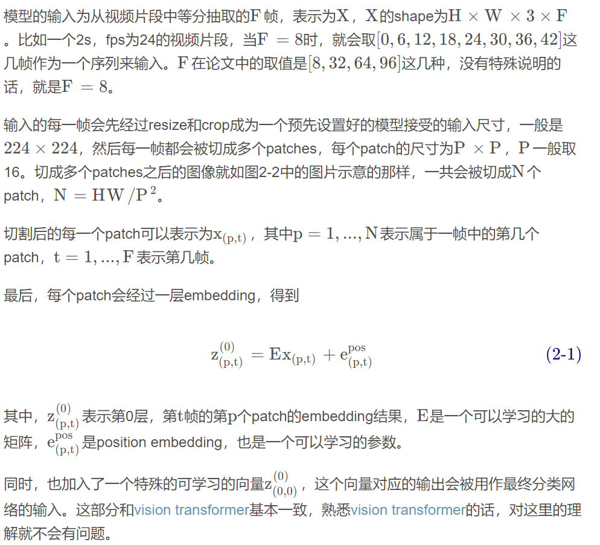

TimeSformer
1. 模型输入
Input clip. The TimeSformer takes as input a clip consisting of F RGB frames of size H × W sampled from the original video.
Due to GPU memory constraints, we are not able to test our model on clips longer than 96 frames. Still, we would like to point out that using clips of 96 frames is a significant departure from current convolutional models, which are typically limited to processing inputs of 8 − 32 frames.
something like vit
{kind=link}


2. 模型结构

在下图中可以清楚看到，注意力机制是如何运作的：

Visualization of the five space-time self-attention schemes studied in this work. Each video clip is viewed as a sequence of frame-level patches with a size of 16 × 16 pixels. For illustration, we denote in blue the query patch and show in non-blue colors its self-attention space-time neighborhood under each scheme. Patches without color are not used for the self-attention computation of the blue patch. Multiple colors within a scheme denote attentions separately applied along different dimensions (e.g., space and time for (T+S)) or over different neighborhoods (e.g., for (L+G)). Note that self-attention is computed for every single patch in the video clip, i.e., every patch serves as a query. We also note that although the attention pattern is shown for only two adjacent frames, it extends in the same fashion to all frames of the clip.
图中，蓝色的图像块是 query 的图像块，其余颜色的图像块，是每个自注意力策略使用到的图像块，没有颜色的图像块没有被使用到。策略中，有多种颜色的图像块，代表注意力机制是分开进行的，比如 T+S，就是先 T，后 S，L + G 也是同理。这里图中只展示了三帧，但是作用时是作用在整个序列上的。
通过对输入图像进行分块，论文中一共研究了五种不同的注意力机制：
- 空间注意力机制（S)：只取同一帧内的图像块进行自注意力机制
- 时空共同注意力机制（ST）：取所有帧中的所有图像块进行注意力机制
- 分开的时空注意力机制（T+S）：先对同一帧中的所有图像块进行自注意力机制，然后对不同帧中对应位置的图像块进行注意力机制
- 稀疏局部全局注意力机制（L+G）：先利用所有帧中，相邻的 H/2 和 W/2 的图像块计算局部的注意力，然后在空间上，使用2个图像块的步长，在整个序列中计算自注意力机制，这个可以看做全局的时空注意力更快的近似
- 轴向的注意力机制（T+W+H）：先在时间维度上进行自注意力机制，然后在纵坐标相同的图像块上进行自注意力机制，最后在横坐标相同的图像块上进行自注意力机制
3. 实验部分
1. 自注意力机制的分析
在 K400 和 SSv2 数据集上研究了所提的五个自注意力策略，表中汇报的是视频级别的分类准确率。其中分开的时空注意力效果最好。

从表中可以看出，对于 K400 数据集，仅使用空间信息已经能够分类比较好了，这些前面的研究者也发现了，但是，对于 SSv2 数据集来说，仅仅使用空间信息的效果非常差。这说明了对时间建模的重要性。
2. 图像大小和视频长度的影响
当每一个图像块的大小不变时，图像越大，图像块的个数越多。同时，帧数越多，输入注意力机制的数据也越多。作者也研究了这些对于最终性能的影响，结果是随着输入信息更加丰富，带来的效果提升是非常明显的。

这里由于显存的限制，没有办法测试 96 帧以上的视频片段。作者说，这已经是一个很大的提升了， 因为目前的卷积模型，输入一般都被限制在 8-32 帧。
3. 预训练和数据集规模的重要性
因为这个模型需要非常大的数据才能够训练，作者有尝试自己从头训练，但是都失败了，因此在论文中报告的所有结果，都使用了 ImageNet 进行预训练。

为了研究数据集的规模的影响，使用了两个数据集，实验中，分四组，分别使用25%，50%，75%和100%的数据。结果是 TimeSformer 当数据比较少的时候表现不太好，数据多的时候表现好。
4. 与 SOTA 比较
在本节中使用了三个模型的变种：
- TimeSformer ：输入 8*224*224，8为帧数
- TimeSformer-HR：空间清晰度比较高，输入为 16*448*448
- TimeSformer-L：时间范围比较广，输入为 96*224*224
K400
在 K400 数据集上视频分类的结果，达到了SOTA。

K600
K600数据集上的结果，达到了 SOTA。

SSv2和Diving48上的结果，SSv2并没有达到最好的结果，作者提到说所提方法采用了完全不同的结构，对于这么有挑战性的数据集来说已经是比较好的了，有进一步发展的空间。

5. 视频中的长期建模
作者还验证了所提模型相比于 CNN 来说，对于长期视频建模的优势。这一步使用了 HowTo100M 数据集。
其中，# Input Frames 代表输入模型的帧数，Single Clip Coverage 代表输入的一段视频覆盖了多久的视频，# Test Clips 代表预测阶段，需要将输入视频裁剪几段才能输入进网络。可以看到，当TimeSformer 输入96帧时，能够有效利用视频中长期依赖的信息，达到了最好的效果。

4. 总结
总所周知，Transformer 的训练非常消耗资源，为了缓解这一问题，TimeSformer 通过两个方式来减少计算量：
- 将视频拆解为不相交的图像块序列的子集；
- 使用一种独特的自注意力方式，来避免所有的图像块序列之间进行复杂计算。文中把这项技术叫做 分开的时空注意力机制（divided space-time attention）。在时间 attention 中，每个图像块仅和其余帧在对应位置提取出的图像块进行 attention。在空间 attention 中，这个图像块仅和同一帧的提取出的图像块进行 attention。作者还发现，分开的时空注意力机制，效果要好于共同使用的时空注意力机制。